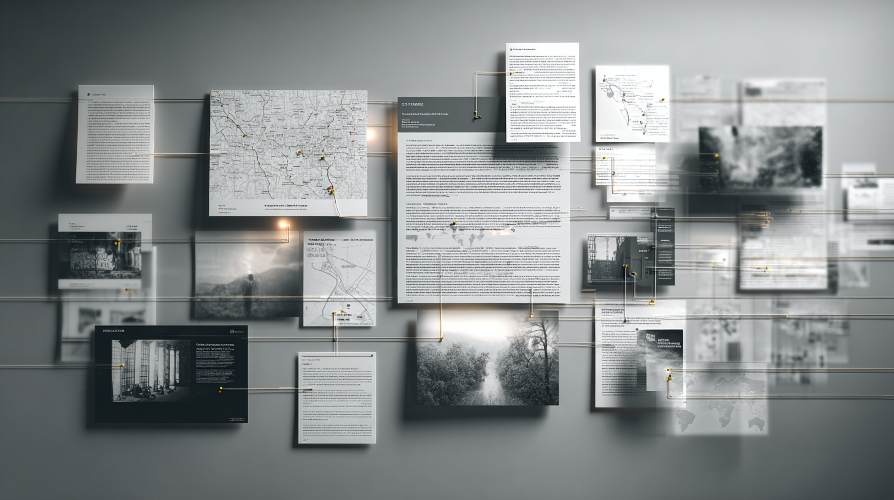

overview
I recently passed the Practical OSINT Research Professional exam, and while I cannot get into the specific exam content, I can talk about what the process taught me, what skills improved the most, and why I think those lessons matter well beyond OSINT itself.
What has always pulled me toward OSINT is the same thing that pulled me toward cybersecurity in general: I genuinely like investigating things. I like following leads, going down rabbit holes, and staying with something until I feel like I have actually gotten to the bottom of it. That is what made this exam so rewarding for me. It gave me a way to apply that mindset in a simulated real-world setting. It was not just about using tools or finding information. It was about building a process, validating what I found, and documenting it in a way that actually held together.
learning to search more like an analyst
One of the biggest things this process improved for me was the way I search.
Before preparing for the exam, I felt like I had a pretty solid grasp on the OSINT tool landscape. I knew there were plenty of ways to find public information, and I was comfortable moving between different platforms and sources. Where I felt weaker was search refinement, especially when it came to more advanced Google dorking and getting past noisy or surface-level results.
That changed a lot during prep.
The biggest shift was learning to think in pivots instead of just searches. Instead of throwing one broad query at Google and hoping the answer showed up, I got much more comfortable starting with one verified detail and building outward from there. That meant refining searches through exact-match phrases, site-specific searches, usernames, dates, alternate naming conventions, archived content, and context clues. A lot of the time, the answer was not sitting there directly. It took multiple passes and a different angle.
That changed the way I think about search in general. Search stopped feeling like a lookup task and started feeling like analysis. It became less about “what do I type” and more about “what can I reliably pivot from next.”
building a more operational osint lab
One of the best things I did during preparation was build out a more complete OSINT lab.
At a high level, that included virtual machines, VPNs, dedicated email accounts, a detailed notes vault, evidence folders, and a fully built-out sock puppet identity. I spent real time making that identity look active and believable across multiple platforms so it felt like a real digital presence instead of a throwaway account.
That made a huge difference in my confidence going into the exam because I was not trying to figure out my setup while also trying to focus on the investigation. It also made me think about OSINT in a more operational way. I became much more deliberate about account separation, identity compartmentalization, evidence handling, and general research hygiene. Having that structure already in place made the work feel a lot more intentional.
the biggest technical lesson: corroboration over assumption
If I had to pick one lesson that came up over and over again, it would be this: a promising lead is not the same thing as a confirmed finding.
That sounds obvious, but it really changed how I worked.
I got much better at slowing down, reducing assumptions, corroborating before concluding, and actively looking for disproof instead of just support. Instead of getting attached to one strong-looking artifact, I pushed myself to ask better questions:
what do I actually know from this
what am I inferring
what would weaken this theory
what independent source would make this stronger
That mindset made me better across the board. It helped with timeline building, social media pivoting, people research, corporate research, archived pages, and image-based investigations. In OSINT, the difference between a clever guess and a solid finding is usually corroboration.
strengthening technical osint skills
By the end of the process, I felt much stronger in several technical areas of OSINT.
Timeline building became one of the most useful ways for me to test whether separate findings actually made sense together. Geolocation started to feel more natural because I got more comfortable using environmental and contextual clues instead of waiting for one perfect direct identifier. Image comparison also became much more structured for me. I stopped relying as much on general visual similarity and started focusing more on specific observable features and cross-referencing those details.
I also got more comfortable correlating information across different sources, using archived pages to fill in gaps, pivoting across social platforms, and connecting people, business, and contextual artifacts into a more complete picture. That kind of correlation work was honestly one of the most satisfying parts of the whole process because it made investigations feel less like disconnected tasks and more like building a case piece by piece.
opsec was the most eye-opening takeaway
The area that impacted me most personally was OPSEC.
The more I learned about how information is exposed through public sources, the more I rethought my own digital footprint. I became much more aware of how often people overshare locations, timelines, employment details, and other details that seem harmless on their own but become much more revealing when correlated. I also learned more about breach exposure, platforms like DeHashed, and how much reused or exposed data can reveal over time.
That was one of the clearest ways this connected back to cybersecurity for me. OSINT is not just useful for finding information on other people. It also sharpens your awareness of exposure, aggregation risk, and how attackers can build a profile from scattered public details.
building a repeatable reporting process
Another major lesson for me was how important reporting is to the investigation itself.
One mistake I made early on was not having a standardized OSINT report template ready before I started. I ended up building one early in the process, and honestly that helped me a lot more than I expected.
Having a set structure for objectives, methodology, evidence notes, analysis, and conclusions made it much easier to stay organized once the research got more complex. It also improved the quality of my work because it forced me to document sources clearly, save supporting evidence consistently, and separate confirmed findings from inference as I went instead of trying to reconstruct everything later.
That really changed how I think about OSINT reporting. It is not just the final step where you dump what you found onto a page. It is part of the investigation. A repeatable reporting process makes the work cleaner, more defensible, and a lot easier to follow.
Because that ended up being such a big improvement in my workflow, I also created a blank OSINT report template based on the format I refined during the process.
why this matters for my cybersecurity career
Passing PORP reinforced something I already suspected: the value of OSINT goes way beyond OSINT.
The same habits that matter in good OSINT work also matter across cybersecurity more broadly. Structured analysis, validation, evidence-based reasoning, documentation, and the ability to investigate without jumping to conclusions too early all transfer directly.
Those skills matter in SOC work when you are trying to separate signal from noise. They matter in GRC and risk work when you are gathering evidence, assessing exposure, and explaining findings clearly. They matter in social engineering and security awareness work because understanding what is publicly exposed gives a much more realistic view of the human attack surface.
More than anything, this experience confirmed that I enjoy the investigative side of cybersecurity and want to keep building in roles where careful analysis, verification, and communication matter. Passing the exam was meaningful to me not just because of the certification itself, but because it sharpened the way I work.
final thoughts
Passing the PORP exam reinforced something I had already started to realize: strong OSINT is not just about tools. It is about process.
It is about knowing how to pivot from one verified detail to another. It is about reducing assumptions, documenting carefully, and building conclusions that are actually supported. It is also about realizing that the same public information that makes investigations possible can also reveal security weaknesses if people are not thinking carefully about their own exposure.
For me, that is what made the experience worth it. It improved my technical approach, made my workflow more disciplined, and reinforced the kind of cybersecurity work I want to keep moving toward.
Download the blank OSINT template ↓